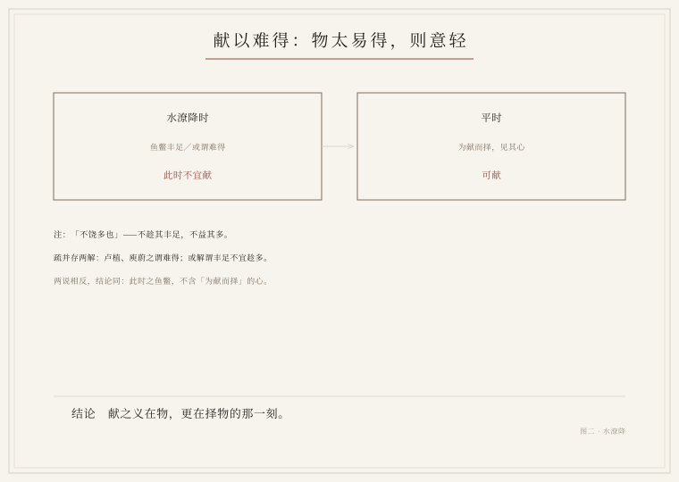

曲礼上 · 一·八十七 · 第 85 课
雨季水潦下降，不献鱼鳖。注一句「不饶多也」，说得极简：这时鱼鳖易得，献之则显以易得之物充礼。
说什么事：水潦降，不献鱼鳖。
落在哪一层：仪，兼及礼意。所避者不是物，是「多」。
为何编在此位：上节讲忧丧之席，此节转入献遗之仪。自此以下十数节，皆言相献之礼。
【经】水潦降，不獻魚鱉。
【注】不饒多也。
水潦 注《释文》「潦音老，雨水谓之潦」。潦是雨水积注。
降 下降、时至。疏引定四年《左传》「水潦方降」。
不献 不以鱼鳖为献。
不饶多 注三字。饶，益也。水潦之时鱼鳖丰足，献之则不是「难得」，而是「趁多」。
两解 疏：卢植、庾蔚之并以为「鱼鳖难得，故不饶多」；或解郑意「水潦降下，鱼鳖丰足，不饶益其多」。一以为难得，一以为太多，结论同：此时不宜献。
雨季水潦下降的时候，不以鱼鳖献人。
一节讲献礼的时令。献物之义，在于「以此表意」；物太易得，则意轻。水潦之时鱼鳖满市，此时献之，是把随手可得之物当成了心意。
第一层 献以难得 礼之献，多取难得之物。难得，才见其为献而备。
第二层 时令入礼 同一鱼鳖，平时可献，水潦时不献。物未变，时变，则礼变。
第三层 两解同归 难得与太多，看似相反，其实一理：此时之鱼鳖不含「为献而择」的心。前者言其不可得，后者言其不必择。
第四层 不饶多 注三字最见分寸。礼不贪多，正因多则轻。
与今日何干 时令水果大批上市、便宜到论堆卖时，拿它当礼物送人，收的人也知道你没费心。
| 左 | 右 |
|---|---|
| 水潦 | 雨水积注，雨季 |
| 降 | 时至而下 |
| 不献鱼鳖 | 此时不以鱼鳖为献 |
| 不饶多 | 不趁其丰足，不益其多 |
| 难得之说 | 卢植、庾蔚之：鱼鳖难得 |
| 丰足之说 | 或解：鱼鳖丰足，不宜趁多 |
画水边一角：水面涨起、岸边泥痕明显，水中隐约几尾鱼影与一只鳖背；岸上置一只空竹笥，笥盖合着、未装物，示不献。不画人、不写文字。赭色只在鳖背一道。
